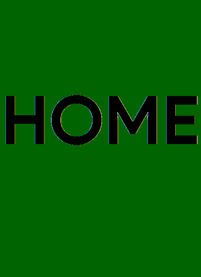
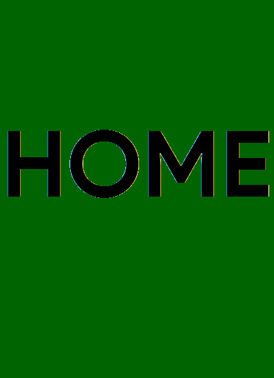

ABOUT
We started this group out in February. The first group name was "Adakad".
It was a language made by our friends.
Then, we changed it to the VM Friends
because a few people weren't a part of that language,
but wanted to be in the group.
We had many fights in the group on being Admin and making others users but
then we settled to one decision and nobody won the fight.
We also created a "Rulebook"
for the group which we will link down below.
We annoyingly had to change the name
"The Friends" because our friend, "TheCricketerFan", added his coding buddy,
the "WearyFern". There was a lot of war between "TheCricketerFan" and "The WearyFern"
even though they were "coding buddies".
They didn't get along well in the end. Since,
he left and all the other members in the group were studying in VM or had previously
studied in VM, we changed the name of the group to "The VM Friends". After naming
it the VM Friends, we
had some pretty weird stuff going on like random people who we
don't even know joining thanks to the "Invite Link".
 
